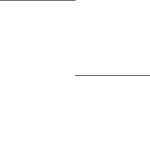

SICP の Picture Language を Kent Dybvig の THE SCHEME PROGRAMMING LANGUAGE SECOND EDITION の 3.3 章に載っている lwp (Light Weight Process) を利用して並列化してみました。
先ずは (cross-limit (compose-painter border wave) 3)
が描かれてゆく過程をお楽しみ下さい。
|  | |
| 通常バージョン | 並列バージョン |
|---|
このページではこれらの動画の作り方を説明したいと思います。
(use util.queue)
(define lwp-queue (make-queue))
(define (lwp thunk)
(enqueue! lwp-queue (lambda () (thunk) (lwp-next))))
(define (lwp-start)
(lwp-pause)
(if (queue-empty? lwp-queue)
#t
(lwp-start)))
(define (lwp-next)
(let ((next (dequeue! lwp-queue)))
(next)))
(define (lwp-pause)
(call/cc (lambda (k)
(lwp (lambda () (k #f)))
(lwp-next))))
線を引くたびにプロセスの切替が起こるように draw-line
の適当な場所に (lwp-pause) を挿入します。
base と count は別の場所で初期化されます。
(define base #f)
(define count 0)
(define (draw-line fb p1 p2)
(let* ((x1 (xcor-vect p1))
(y1 (ycor-vect p1))
(x2 (xcor-vect p2))
(y2 (ycor-vect p2)))
(lwp-pause)
(fb-draw-line! fb
(round->exact x1)
(round->exact y1)
(round->exact x2)
(round->exact y2)
0 0 0)
(save-frame-buffer-as-png-file
fb (format #f "~a/~5,'0d.png" base count))
(inc! count)
))
この中 fb-draw-line が実際に描画を行う手続きで、
その次の save-frame-buffer-as-png-file は
その時点の画像をPNGファイルに保存します。
つまり draw-line が呼ばれて線分を描くたびに次づぎと
PNG ファイルを作って行きます。
これらを後で gif アニメーションなどの動画ファイルに変換します。
次の draw-painter が画板(frame-buffer)を作りそれに合わせた
frame を作って painter に渡します。
(define (draw-painter painter width height filename)
(let* ((fb (make-frame-buffer width height))
(frame (make-frame fb
(make-vect 0.0 height)
(make-vect width 0.0)
(make-vect 0.0 (- height)))))
(set! count 0)
(set! base filename)
(lwp (lambda () (painter frame)))
(lwp-start)
))
先ほどの count と base はここで初期化しています。
(painter frame) を最初のプロセスとして登録して
(lwp-start) で起動します。
beside 手続と below
手続が並列化できるのがわかります。
これらの手続はそれぞれフレームを左右/上下に二分割して引数に与えられた二つのペインタを割り当てるペインタを生成しますが、この分割されたフレームに対するベインタは並列に呼び出すことができます。
(define (beside painter1 painter2)
(let ((split-point (make-vect 0.5 0.0)))
(let ((paint-left
(transform-painter painter1
(make-vect 0.0 0.0)
split-point
(make-vect 0.0 1.0)))
(paint-right
(transform-painter painter2
split-point
(make-vect 1.0 0.0)
(make-vect 0.5 1.0))))
(lambda (frame)
;; 二つのぺインタを同時に起動
(lwp (lambda () (paint-left frame) ))
(lwp (lambda () (paint-right frame) ))
))))
(define (below painter1 painter2)
(let ((split-point (make-vect 0.0 0.5)))
(let ((paint-below
(transform-painter painter1
(make-vect 0.0 0.0)
(make-vect 1.0 0.0)
split-point))
(paint-above
(transform-painter painter2
split-point
(make-vect 1.0 0.5)
(make-vect 0.0 1.0))))
(lambda (frame)
;; 二つのぺインタを同時に起動
(lwp (lambda () (paint-below frame) ))
(lwp (lambda () (paint-above frame) ))
))))
さて、 ここで cross-limit をよく見てみると、
(define (cross-limit painter n)
(if (= n 0)
painter
(let ((top (beside painter (cross-limit painter (- n 1))))
(bottom (beside (cross-limit painter (- n 1)) painter)))
(below bottom top))))
この手続は再帰的に beside と below
を呼び出してゆきます。 beside と below
が上の様に並列化したものであれば, この cross-limit
は再帰的に呼ばれるたびに次々とプロセスを生成するペインタを生成します。冒頭のデモは
(define clw (cross-limit (compose-painter border wave) 3)) (draw-painter clw 300 300 "pb")で作った png を gif アニメーション変換したものです。